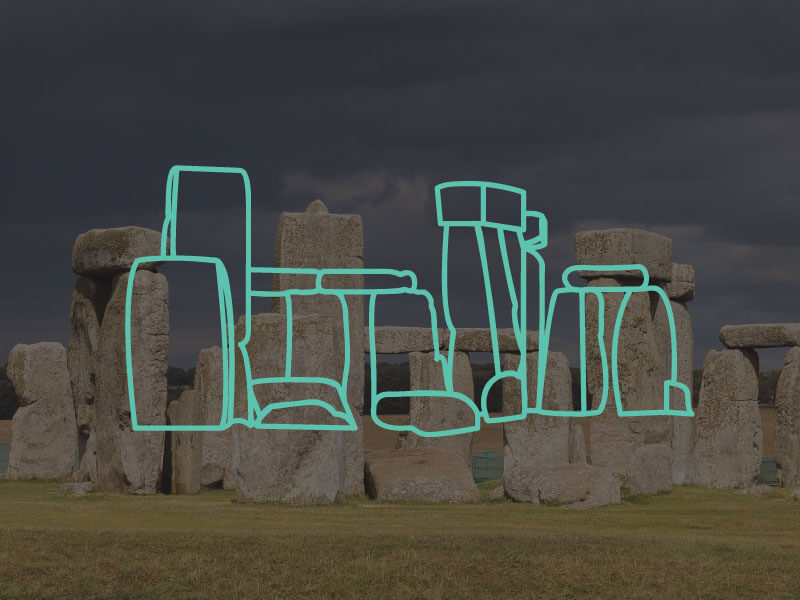

Stonehenge

Stonehenge is a prehistoric monument in Wiltshire, England. Stonehenge’s ring of standing stones are set within earthworks in the middle of the most dense complex of Neolithic and Bronze Age monuments in England, including several hundred burial mounds.
One of the most famous landmarks in the UK, Stonehenge is regarded as a British cultural icon. It has been a legally protected Scheduled Ancient Monument since 1882 when legislation to protect historic monuments was first successfully introduced in Britain. Stonehenge is owned by the Crown and managed by English Heritage; the surrounding land is owned by the National Trust.
In 1986, Stonehenge became a UNESCO World Heritage Site.